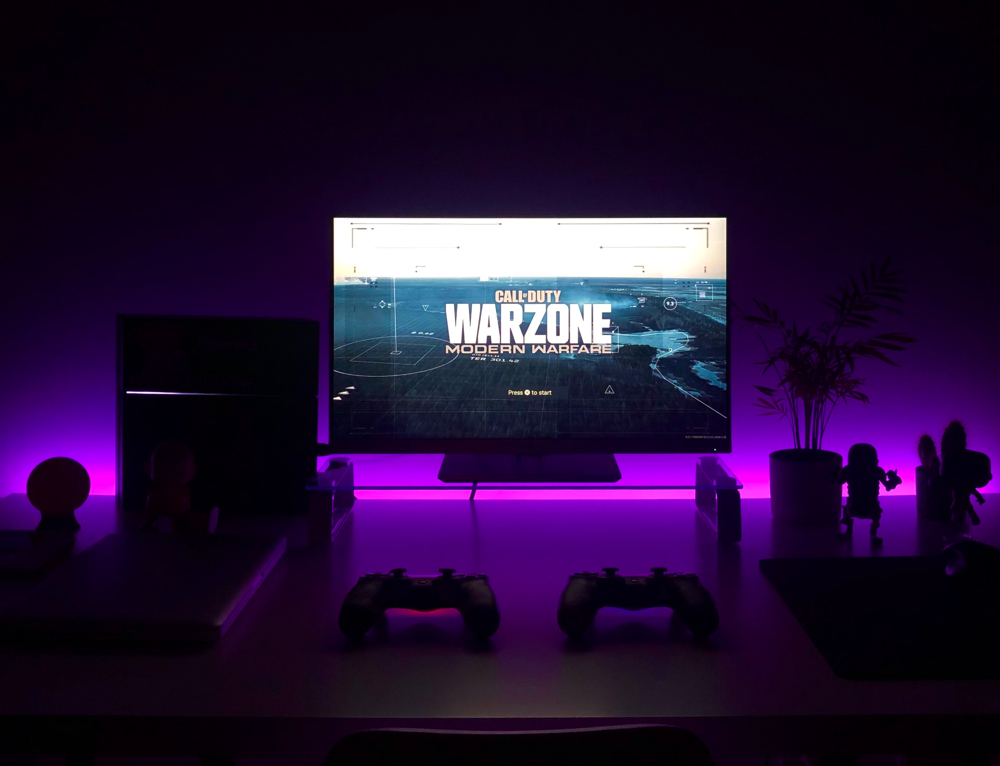

Keep Pushing Persistence Is A Key To Bravery
September 27 2021 by Johvahn Brown

Computing is by no means an easy feat to conquer, its tedious, time consuming and sometimes even discouraging.To keep fighting is daunting but the reward is worth it. The motto of my past school is the Brave May Fall But Never Yield being unyeilding means you'll persevere against all odds don’t let the obstacles and failures pin you down or push you against the success you want. Fight hard the battle of learning and take the challenges with courage and determination. Do not measure yourself by failure or a degree. Measure your life by the dreams you have and continue to pursue them. Keep moving forward with bravery and the day of your success so isn't far away. While you're going through the learning process try to find the satisfaction in your work, pretend you feel satisfied. Tell yourself you had a good day. Do it with a smile rather than a scowl. Your positive energy will radiate. If you act like you're having fun, you'll find you are having fun. Learn to be thankful and proud of the struggles you are enduring. They are what will shaped you into the innovator you want to be. They will code a flashlight to light your way in the darkness.
Find Ways To Destress
September 27 2021 by Johvahn Brown
To be better prepared for tomorrow do your best today. As only your best is good enough and it is what you get put in you get out.You can be happy in your life as long as you’re content. Just believe in yourself and your dream. but don't over do it recreation is also apart of learning when school seems unbearable, take a break. You don't need to rush your story in life. It is full of unknown mysteries, suspense, adventures and unachieved success. Sometimes a just mental vacation is needed one where you do the things you love to relax. You have never been taught how to relax, how to take care of yourselves in a positive, nurturing way not just going on a vacation or playing video games. Twenty minutes of deep relaxation a day will aid your mental growth, improve your emotional stability and relieve all the stress that focusing on school can have pent up.